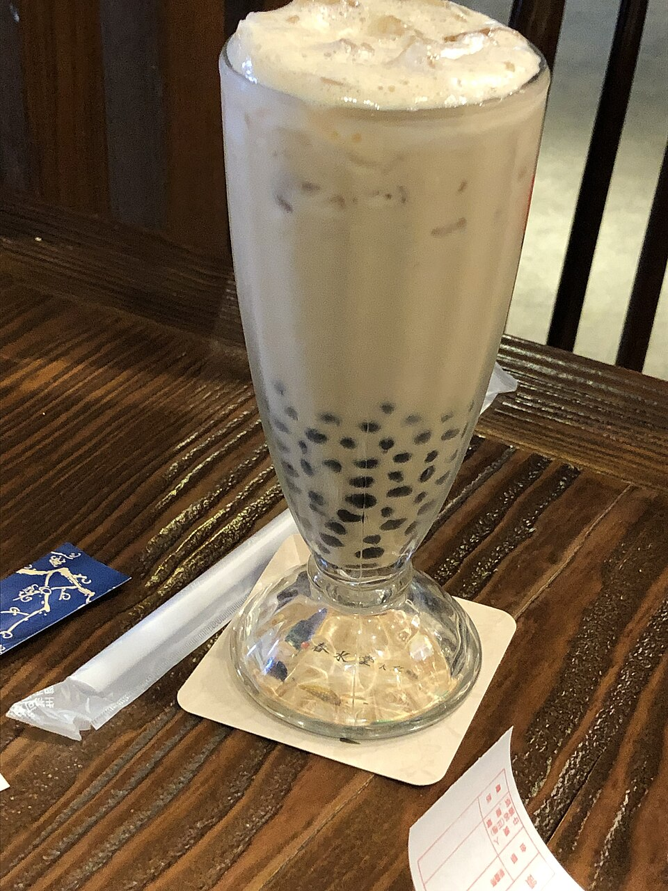
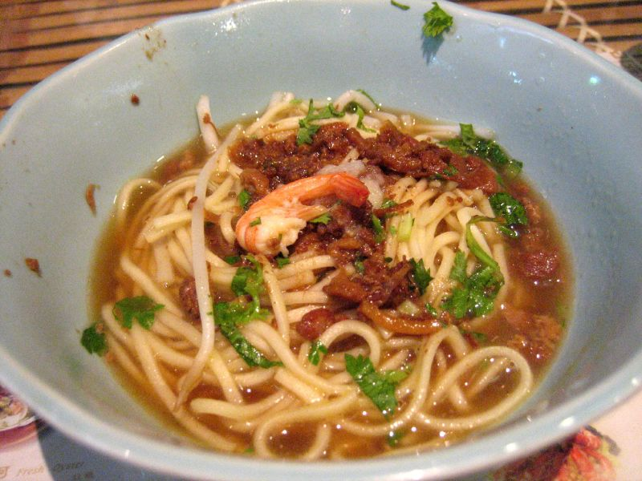

台灣美食
台灣是一座美食之島。從街頭巷尾的經典小吃、熱鬧的夜市，到消暑的甜點飲料與各地特色料理，每一口都藏著台灣的歷史與人情味。這個網站帶你認識台灣最具代表性的美食。
滷肉飯、牛肉麵、小籠包……認識台灣人從小吃到大的家常美味。
前往經典小吃
大雞排、胡椒餅、鹽酥雞……走進人聲鼎沸的夜市，感受台灣的夜生活。
前往夜市美食

前往甜點與飲料

前往各地特色美食
想了解更多旅遊資訊，可以參考 交通部觀光署官方網站。
你吃過幾次台灣夜市？